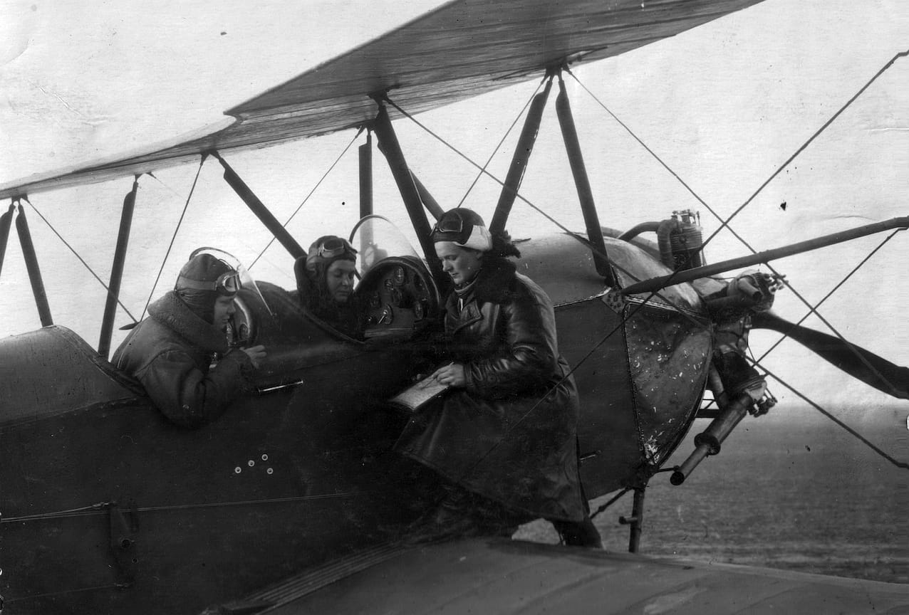

“Lideradas pela temerária aviadora Marina Raskova e comandadas pela major Yevdokia Bershanskaya, 115 mulheres compunham o 588º regimento de aviação soviética durante
a segunda guerra mundial. Seus ataques suicidas durante a noite, enquanto desligavam seus velhos aviões Polikarpov Po-2, fizeram que o exército nazista as batizasse como
“As Bruxas da Noite”.
Ao contrário do que Hollywood e quase a completude da produção cinematográfica sobre a Segunda Guerra Mundial pretendem mostrar, um dos regimentos mais bravos durante a
segunda guerra foi formado por mulheres comunistas: “As bruxas da noite”. Nunca antes e nunca depois um país mobilizou tantas mulheres dentro das fileiras do seu exército
num contexto de guerra. Foram quase um milhão de mulheres dentro das fileiras do Exército Vermelho em todas as posições: sapadores, petroleiros, franco-atiradores,
servos de metralhadoras, ganhando 92 delas o reconhecimento de heroínas da União Soviética, 50 o conseguiram postumamente. As soviéticas eram as únicas mulheres no mundo
que naquele conflito sangrento pilotaram aviões em missões de combate, enfrentando-se em inúmeras ocasiões de forma letal contra os próprios ases da Luftwaffe de Hitler.
Durante a Segunda Guerra Mundial, as principais potências empregaram regimentos de mulheres-piloto. A Inglaterra criou o “Air Transport Auxiliary”, ou “ATA”, aceitando
mais de 160 mulheres encarregadas de mover aviões de fábricas para bases ou portos, transportando cargas ou rebocando alvos para a prática de tiro ao alvo. As Forças Armadas
dos EUA incluíram quase 1.000 mulheres com tarefas semelhantes em suas fileiras. Na Alemanha, não foi diferente. A piloto Hanna Reistsh ficou famosa aterrissando e decolando
de uma pista improvisada em Berlim durante o cerco do Terceiro Reich. Porém, foi apenas a URSS o país que incluiu mulheres em unidades de combate.
No dia 8 de outubro de 1941, Stalin decretou que as mulheres voluntárias fossem lutar em uma guerra na qual os nazistas estavam ganhando terreno. Mais de um milhão
de mulheres apareceram para ocupar posições de atirador, sapador e petroleiro. Mas não seria até 1942 quando uma coronela pioneira na aviação feminina propôs algo
impensável até então: a criação de três regimentos sem presença masculina. O nome daquela teimosa aviadora era Marina Raskova. Ela foi a primeira aviadora do exército
russo. Suas boas relações com Stalin a levaram à criação de três regimentos femininos de combate aéreo, a seu pedido: divisão 586, divisão 587, e o mais famoso de todos, o
588º Regimento de Bombardeio Noturno: “As Bruxas da Noite”. Raskova, formada em química, começou na Força Aérea Soviética em 1933. Ela se tornou a primeira instrutora
feminina na Academia Aérea de Zhukovskii. Depois de realizar vários feitos como piloto e de ter participado da Batalha de Stalingrado, ela foi nomeada Heroína da União
Soviética e Stalin lhe concedeu o posto de Major. Seu lema era: “Nós podemos fazer tudo”.

As aviadoras soviéticas frequentemente paravam os motores de seus aviões para se deslizar silenciosamente sobre os alvos em que as bombas foram lançadas. Lyuba Vinogradova
relata “Elas eram admiráveis, foi preciso muita coragem para lutar naqueles dispositivos que pegaram fogo facilmente. Muitas tiveram uma morte horrível. Em geral, entre as
pilotos e navegantes que lutaram nas unidades da linha de frente, as vítimas foram muitas. Talvez um terço. É difícil quantificar. No regimento de bombardeios noturnos, onde as
vítimas foram cobertas pelo pessoal, as mortes e feridas totalizaram 50% das tropas iniciais do regimento”.
Os aviões usados pelas bruxas da noite eram do desatualizado modelo soviético Polikarpov Po-2, também chamado de U-2. Era um biplano usado principalmente para praticar e
fumigar. Era um dispositivo versátil e de uso geral, tornando-o o biplano mais fabricado da história. No entanto, não era o avião ideal para competir em combate. Normalmente,
possuía uma metralhadora ShKAS de 7,62 mm e um pequeno carregamento de bombas (seis pequenas bombas de 50 kg). Sua velocidade máxima de operação era de 152 km / h e a
velocidade de cruzeiro era de 110 km/h. A velocidade mínima dos caças alemães era maior que a velocidade máxima dos biplanos das Bruxas da Noite, dificultando derrubá-los.
Até 1944, elas voavam sem paraquedas para aumentar o número de bombas que podiam transportar, chegando a 15 partidas por noite, orientando-se pelo brilho de chamas e bússolas.
Elas se aproximaram do alvo planando baixo e com o motor desligado sobre os campos nazistas, o que produziu um efeito psicológico devastador. Quase não havia som do vento
assobiando enquanto roçava a estrutura do avião. Os alemães os apelidaram de Nachthexen, “As bruxas da Noite”, quando comparadas ao barulho de uma vassoura voadora.
As aviadoras ganharam notoriedade também por encontrar alvos inimigos sem ajuda de radar no meio da escuridão. As condições adversas de fome, frio, vestimenta ruim e aviões
tecnologicamente inferiores não impediram que elas cumprissem suas missões de bombardeio de assédio e bombardeios de precisão. Concretizaram 24.000 missões e despejaram 23.000 toneladas
de bombas nos nazistas.
“As Bruxas da Noite” foi o sobrenome que o exército alemão deu às aviadoras militares do 588º Regimento de Bombardeiros Notários, mais tarde feito 46º Regimento de Aviação de
Bombardeiros Noturnos da Guarda “Taman”. Foi a unidade mais decorada da Força Aérea Soviética. Em 1981, Yevgeniya Zhi Gulenko, uma das aviadoras do grupo, dirigiu o filme
“V nebe Nochnye vedmy'” (As bruxas da noite no céu), disponível na internet. No Brasil Carlos e Ana Daróz lançaram o livro “Bruxas da Noite”, de 2018, da editora Somos.